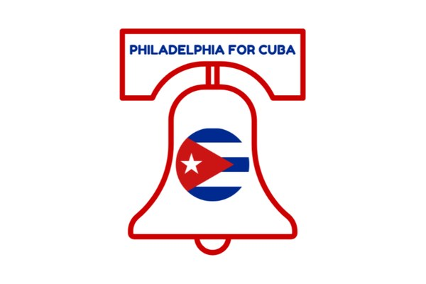
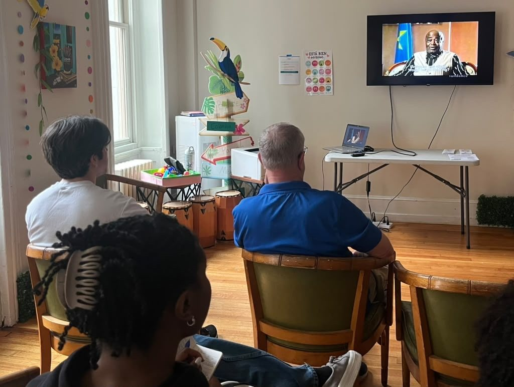

A fiscally sponsored program of PAMA
Philly for Cuba (P4C)
Neighbors, students and clinicians in Philadelphia building medical solidarity with Cuba, and supporting underserved communities at home and abroad.

P4C at a glance
- $1,960given to P4C through PAMA, May 31 – July 13, 2026
- 53individual gifts in the first weeks of fiscal sponsorship
- 3evenings of Sara Gómez films, November 20–22
From PAMA’s financial records. See the full financials
Meet the founder
Dr. Renee Quarterman, MD, founded P4C on a simple belief: healthcare is a hemispheric responsibility, not a national one. Through organizing, community education and coalition‑building, she has created a space where physicians, students and neighbors learn about Cuba’s medical model and contribute to humanitarian support.
In 2026, PAMA became P4C’s fiscal sponsor, giving the group nonprofit infrastructure, financial transparency systems and logistics support, so Dr. Quarterman can focus on the mission instead of paperwork.

New: The Films of Sara Gómez

Film weekend · November 20–22, 2026
Three evenings with a pioneering Afro‑Cuban filmmaker
Sara Gómez (1942–1974) was the first woman to direct a feature film in Cuba. Her documentaries and her one feature show everyday Cuban life, with frank looks at race, gender, family and work.
- Fri, Nov 20 · 6–8 PM — six short documentaries
- Sat, Nov 21 · 5–7 PM — eight short films, including Prenatal Care
- Sun, Nov 22 · 3–5 PM — One Way or Another (De Cierta Manera)
Where: The Philadelphia Ethical Society, 1906 Rittenhouse Square
Tickets: $15 per day, or $40 for the full weekend
All proceeds go to Global Health Partners’ mother‑baby health project.
Get ticketsP4C in the community
Teach‑ins, screenings, book tables and solidarity markets bring Philadelphians together to learn about Cuban medicine and support the people it serves.





Give to P4C
Gifts support P4C’s Philadelphia solidarity work and the grassroots care it makes possible. PAMA is P4C’s fiscal sponsor, so your gift is tax‑deductible as allowed by law.
Donate with PayPalCome to the film weekend
Join us November 20–22 at the Philadelphia Ethical Society. Every ticket supports mothers and babies.
Get ticketsStart a project like P4C
Clinicians and organizers leading health or solidarity work can apply for PAMA fiscal sponsorship. We handle the admin; you lead the mission.
Apply for fiscal sponsorship